|
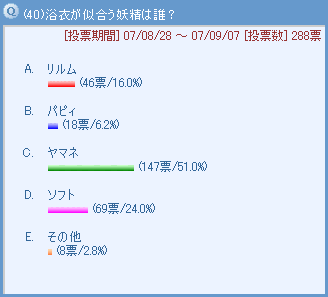 和風な女の子にはぜひ浴衣を…ということでダントツでヤマネが票を集めました。とにかく似合う！という意見がたくさん、他の３人の女の子もオシャレには自信がありそうだけど、ヤマネの浴衣にはかなわないと思いそうですね。一番票が入らなかったのはパピィ…パピィには子供用のかわいい浴衣が似合いそうな気がします。［コメント一覧］
|
|
ヤマネ(3)
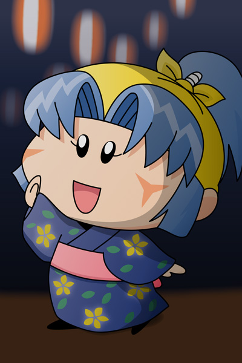
１位の記念にヤマネちゃんに浴衣を着せてみました。大人っぽい雰囲気を演出したかったので、紺色に花柄の浴衣をチョイスしてみましたが、私が描くと地味になってしまうのか、「村娘Ａ」といったような平凡さが目立つことに(^◇^;)。皆さんだったらどんな色と模様の浴衣をヤマネに着せてみたいと思いますか？
場面は妖精忍者の里での盆踊り大会。いつもより大人っぽいヤマネの踊りを見て、ヤシチはヤマネに特別な感情を抱いてくれるはず。二人にとって忘れられない夏の思い出が今ここに生まれます！(2007/11/20) |
|
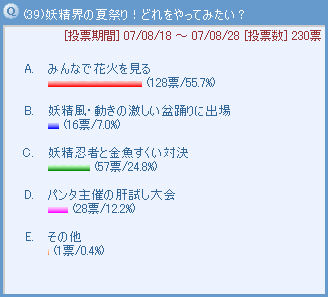 投票を受け付けるまでもなく、当然のように花火が１位になりましたね。コメントにもあるように、花火は一人じゃなくみんなで見る物。大好きな妖精と一緒に見る花火は素敵な夏の思い出の１ページになること間違いなしです。それに妖精界の花火は人間界とは違った仕掛けもありそうで楽しそう。２位の金魚すくい対決のコメントにあるヤシチvsネズミも見てみたいです。こっそりヤマネがヤシチに加勢して、ヤシチが何とかネズミを負かすのかな。［コメント一覧］
|
ヤシチ＆ハンゾー＆サスケ＆ヤマネ(1)
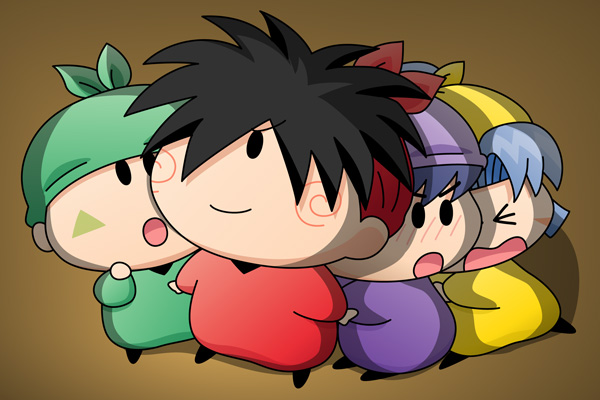
花火の美しさにうっとりするヤシチと、花火の大きな音に怖がる幼い妖精忍者を描いてみました。大きな音にびっくりして慌ててヤシチの背中に隠れたサスケですが、サスケの背中にはいつの間にかヤマネも隠れていてドキドキなサスケ…といういつもの展開です(笑)。果たしてサスケはこの後どんな行動に出るのでしょう？
妖精の押しくらまんじゅうなど、妖精が体をくっつけ合うシーンが私は大好きです（描くのは大変ですけど）。自分で描いていながら妖精のほっぺのやわらかさにうっとりしっぱなしでした。(2007/10/13)
|
 皆さんの予想通りの結果になったかな。夏にアイスといったら妖精が一番喜びそうな組み合わせですね。しかもクモモのアイスだからほっぺたが落ちることは間違いなさそうです。逆に一番票の少ないのは王国打倒、別に夏でなくてもいいし、真っ黒なワルモ団と共にするのは暑苦しそうですし。その他の意見もどれも体験してみたいものばかりですね。［コメント一覧］ 皆さんの予想通りの結果になったかな。夏にアイスといったら妖精が一番喜びそうな組み合わせですね。しかもクモモのアイスだからほっぺたが落ちることは間違いなさそうです。逆に一番票の少ないのは王国打倒、別に夏でなくてもいいし、真っ黒なワルモ団と共にするのは暑苦しそうですし。その他の意見もどれも体験してみたいものばかりですね。［コメント一覧］
|
ミルモ＆クモモ(1)
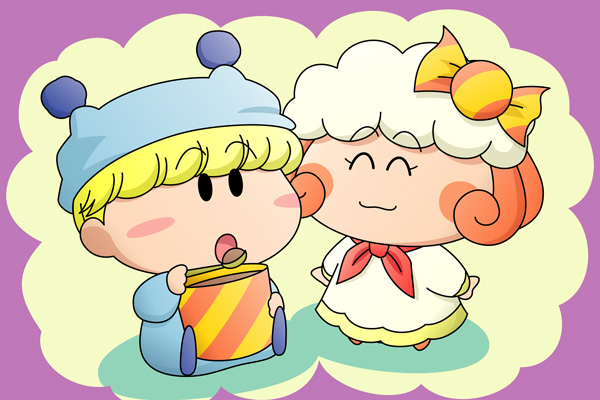
ミルモ「あ〜〜〜ん」
クモモ「お味はいかがクモ？」
ミルモ「うんめ〜〜っ！
誰かさんが作ったアイスと違って、やっぱりクモモの作る
チョコアイスは格別だぜ」
クモモ「それはうれしいクモ」
ミルモ「で、これ全部食っていいのか？」
クモモ「もちろんクモ、ミルモさんは大事なお客さんだから
いっぱいサービスするクモ。
おかわりもたくさんあるクモよ」
ミルモ「うひょーっ、じゃあ遠慮無くたくさんいただくぜぃ」
ミルモの夏の思い出の１ページに、アイスを食べ過ぎて翌朝お腹を壊した苦い経験が追加されるのであった・・・。
最近はストーリーを意識した絵ばかり描いていたので、久々にノーマルな絵を描いてみました。クモモはお菓子作りのプロなのに、なんでミモモショップで働いているんだろう？ お菓子作りはあくまで趣味で、実は仕事の出来る女になりたい！と強い志を持ったスーパーレディなのかもしれません。(2007/10/1)
|
 いつもかわいこぶりっこをしていても男は男。ムルモの方から男らしく告白してほしいというみんなの願いが投票結果に表れました。幼いムルモの恋心はまだまだこれからといった感じでしたが、それが大きくなったとき、二人の関係は変わっていきそうな気がします。［コメント一覧］ いつもかわいこぶりっこをしていても男は男。ムルモの方から男らしく告白してほしいというみんなの願いが投票結果に表れました。幼いムルモの恋心はまだまだこれからといった感じでしたが、それが大きくなったとき、二人の関係は変わっていきそうな気がします。［コメント一覧］
|
ミルモ＆リルム＆ムルモ＆パピィ(1)
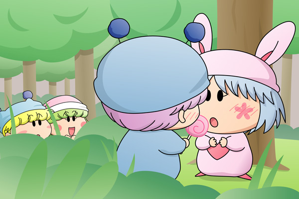
パピィ「どーちたのよ、急にこんなところに呼び出したりちて」
ムルモ「り、リルムしゃんからキャンディーをもらったんでしゅ…」
パピィ「あら、あたちにくれるの？
ありがとう、ムルモ！」
ムルモ「しょ、しょの…」
パピィ「何よ、早く言いなちゃいよ！」
リルム「ファイトですわ！ムルモ様！」
ムルモ「パ、パピィと一緒に食べたいでしゅっ」
パピィ「え・・・？」
ミルモ「あいつもなかなかやるじゃねぇか、うんうん」
ムルモ「どうしてもパピィと一緒に食べたいでしゅ！
ボクはパピィのことが・・・」
いやもう書いてて恥ずかしいです(^◇^;)。ムルモの告白シーンの一例を描いてみました。パピィは以前からムルモLOVEでしたが、ムルモの方もある日何かの拍子でパピィのことが気になり出し、そしていよいよ告白へ・・・というシーンになります。この後パピィは泣いて喜びそう。いや、もしかしたらまたいつものパターンに突入！？
端っこに写っているお邪魔な二人。パピィのことでそわそわしていたムルモがリルムのお節介レーダーに引っかかってしまいました。ムルモにプレゼントのアドバイスをしただけでなく告白の本番も実は見られていたことをムルモが知ったら、恥ずかしさのあまり「実は冗談でしゅ」なんて心にもないことを言ったりして。(2007/9/25)
|
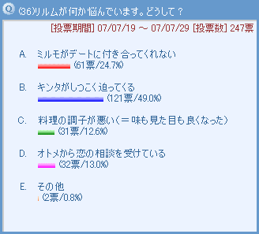 Aが１位になるのかなと思っていたけれど、何とキンタのストーカー行為が１位になろうとは(^^;。確かに何を言っても聞かないキンタにアニメ版のリルムはすごく悩んでいました。2位のミルモに対してもリルムは悩むことが多かったですが、ミルモを誰よりも理解しているリルムがミルモを信じ続け、それがいずれ報われるといった二人の深い愛情も何度も描かれましたね（いや、ミルモが面倒臭がりなだけ？）。［コメント一覧］
|
ミルモ＆リルム＆キンタ(1)

キンタ「リルムしゃん、今日こそはオラと結婚して欲しいダス！」
リルム「き、キンタさん！？」
ミルモ「おめー、久々に現れたと思ったらまだあきらめて
なかったのかよ…で、どうすんだ？リルム？」
リルム「んもうっ、ミルモ様ったら！」
キンタ「昨日リルムしゃんの夢を見てオラは気がついたんダス。
オラの嫁にはやっぱりリルムしゃんしかいないってことを…」
リルム「こうなったら奥の手ですわ…」
ミルモ「！！」
リルム「ミルモ様〜っ」
ミルモ「よせっ、離れろ〜っ」
リルム「いいえ、わたくしは離れませんわ」
キンタ「り、リルムしゃん・・・」
キンタのストーカー行為を逆手にとって、普段は控え目なリルムがこんな風にミルモに積極的になるシーンを想像してしまいました。ミルモの方も恋のライバルに対して「オレの方がリルムにふさわしい」と思う・・・ことはなくて、恥ずかしさですぐにリルムから逃げ出してしまいそうですけど…。リルムの結婚後、キンタはちゃんとリルムのことをあきらめることができたのかどうかが気になります。(2007/9/8)
|
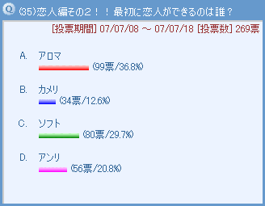 恋人企画を今度は女の子バージョンで行ってみました。結果はわざわざアンケートを採るまでもなくアロマの圧勝でしたね。他の女の子は時間がかかりそうというのもありますが、皆さんのコメントを見てもアロマが恋に落ちるのも時間の問題という雰囲気が伝わってきます。今回注目のコメントは、アンリとキンタが結ばれる…これはすごく説得力がありますね。キンタは今頃、伝説の双子の称号を得たアンリのことが気になっていたりして。［コメント一覧］
|
ヤシチ＆アンリ＆センリ＆アロマ(1)
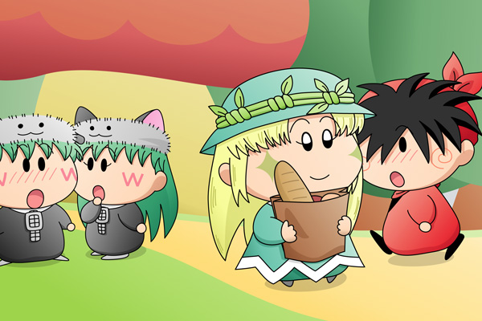
気品高く、周りの者を癒すという雰囲気を放つアロマ、すれ違った男の子たちがぽーっと振り返ってしまう…という絵を描いてみました。特にあまり意味もなく、男の子にヤシチとセンリを選んでみましたが、ヤシチはともかく、センリまでもが振り返ってしまうかどうかはちょっと怪しいところではありますが…（センリにはアンリがいる！とセンリファンから怒られてしまいそう^^;）。
この後アロマが転んでしまって、手に持っていた買い物袋の中身をそこら中に落としてしまう…といった展開を考えた場合に、ヤシチとセンリとアンリの反応が楽しみです。ヤシチはきっと分かりやすい反応を示してくれるんだろうなぁ。(2007/8/11)
|
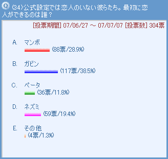 恋人企画第一弾！ビケーを除くミルモフレンズ＋ネズミの４人を対象にしてみました。アクミと相性の良さそうなネズミがダントツかな〜と思いきや、ガビンが圧勝でした。心優しくて、守ってあげたくなるところが彼の魅力でしょうか。マンボも票を集めましたが、怪盗チョコソフトの連載がなければ結果は違っていたかも！？［コメント一覧］
|
マンボ＆ガビン(1)
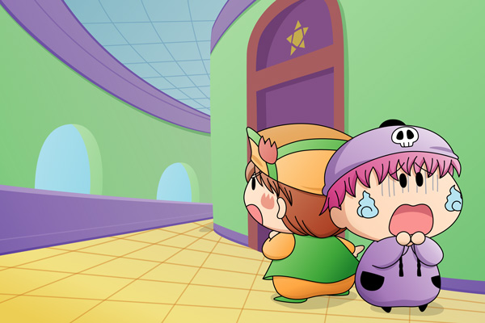
ガビン「昨日からずっと誰かにつけられているんだ…。
ボクの人生これで終わっちゃうのかも…がび〜ん」
マンボ「オレがガビンを守ってやる！
姿を出せ！そこの壁に隠れているんだろ！！」
ガビン「ボクを助けようとしたマンボも狙われて
ボクと同じお墓に入れられてしまうんだ…がび〜ん！」
妖精学校にて、女の子からの好意を受けているにもかかわらずそれに気がつかないガビンを描いてみました。ガビンはいつもマンボたちと一緒にいるから、女の子の方もなかなか近づけなくて。親友のマンボも一緒になって勘違いしてしまいます。ガビンがもしも女の子だったらマンボとお似合いだったかもしれませんね。(2007/7/30)
|
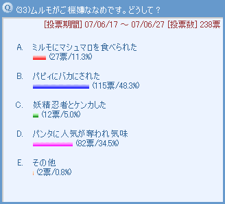 アニメでもよく見られた展開が１位に選ばれました。ことあるごとにケンカをするムルモとパピィ、パピィに言い負かされてしまって怒ったムルモが「パピィとは絶交でしゅ」と立ち去る王道パターンですね。せっかくなので仲直りの王道パターンも下に描いてみました。２位のパンタへの敵対心も面白そうです。悔しい表情を浮かべながら鏡に向かってブリッコの練習を繰り返すのかな。
［コメント一覧］
|
ムルモ＆パピィ(12)
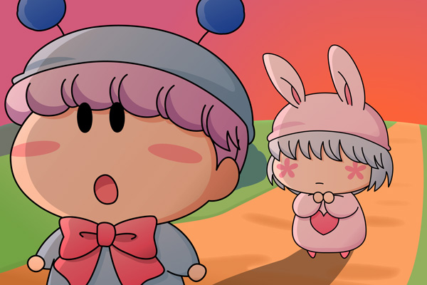
パピィ「待ってムルモ！」
前を歩いていたムルモが立ち止まりました。
パピィ「さっきはあたちが悪かったわ。
その・・・ごめんなちゃい！」
ゆっくり振り返ったムルモは笑顔で言いました。
ムルモ「ううん、もういいんでしゅよ。
ボクもさっきはどなって悪かったでしゅ」
パピィ「ムルモ…」
そうして仲直りした二人は、夕焼けの小道を二人並んで歩いて帰るのでした。
紳士なムルモはパピィが心を込めて謝ってきたら、何事もなかったかのようにすぐに許すでしょうね。優しいムルモの表情にパピィもまた惚れてしまうわけで。しかし翌朝は再びパピィがケンカをしかけてきてまたまた大げんか…ホント疲れる毎日だなぁ。さてこのお約束を書き換えるのは二人のどっちでしょう？これは近々投票のお題にしてみたいと思います。(2007/7/25)
|
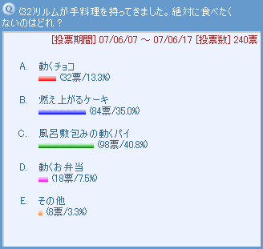 リルムの料理は順位の付けようがないところですが、あえて順位を付けるとしたら…ということで１位になったのは９３話「恋する妖精」に登場した動くパイでした。何と言ってもあの虫が見る者にインパクトを与えてくれます。完成までに時間がかかった理由はやはり材料（虫）集めなのかな？あの風呂敷の大きさを考えると、犠牲になったのはミルモだけではないような気もしますね。２位の燃え上がるケーキは胃袋がやけどしそう。こうしてミルモの胃袋がどんどん鍛えられていくわけですね。［コメント一覧］
|
|
リルム(3)
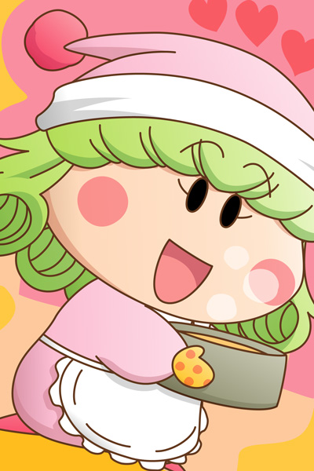
ミルモのためにお菓子を作るリルム…をイメージしてみましたが、いまいち現実感が無いですね。どおりゃあーっと気合いを入れて料理する方がリルムらしいというか、どちらかというとミルモの妄想に近いですね。
とはいえ、ミルモはリルムのことが大好きだから、どんなにまずい料理でも、リルムの一生懸命な姿を見たらちゃんと食べてくれるのかも。そんな二人のラブラブな光景を想像するのが私は好きだったりします。
(2007/7/23)
|
|
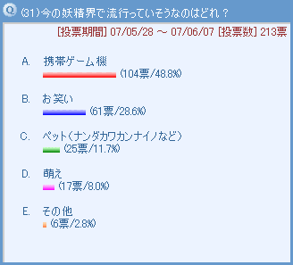 流行のトップは携帯ゲーム機。アニメでも人間界同様に携帯電話が登場したくらいだから、妖精界でもニンテンドーDSのようなゲーム機が人気になっていそうです。そして品薄で手に入れるのも大変な状況が続いているのかも（ミルモが何個も買い占めている！？）。謎の多い妖精界だから流行を考えるのは難しいけど、その他にあるアイドルブームはありそうですね。きら☆レボのようなアイドル妖精が登場したらミルモたち男性陣はメロメロになってしまいそう。［コメント一覧］
|
ハンゾー＆サスケ(4)
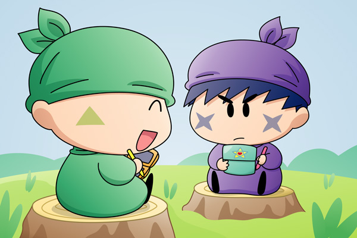
サスケ「ハンゾー、今日はフェアリーDSの
『ガイア族の挑戦状』で勝負するだぜ」
ハンゾー「ボクもこのゲームは大好きなのら〜」
サスケ（ふふん、昨日の特訓の成果を見せてやるだぜ。
悪いけどハンゾーの悔しがる顔が楽しみなんだぜ）
しかし！世の中には絶対に叶わないものがあるということを、今から１時間後に思い知らされるサスケであった・・・。
ハンゾー「サスケは弱すぎてちっとも面白くないのら」
サスケ「ハンゾー！今のは卑怯なんだぜ！！
もう１回勝負だぜ！！」
こんな風にサスケに不名誉な連敗記録が付いてしまうわけですが、ハンゾーの方もサスケに１勝くらいさせてあげようと情けをかけるようなことはやらなそうです。果たしてこの後はどんな展開が待っていることやら。それと、ゲームのタイトルが有名なク○ゲーと似ているのは偶然です(^^;。(2007/7/21)
|